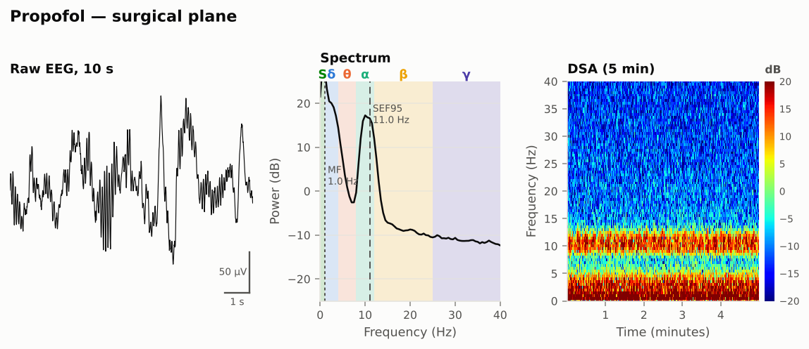
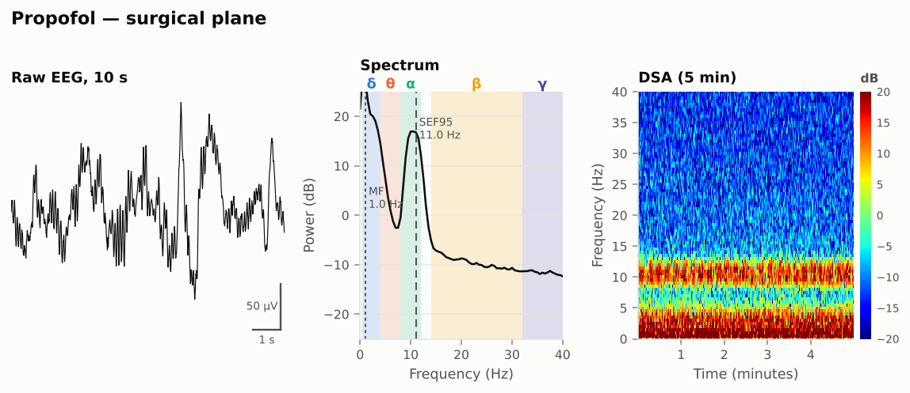
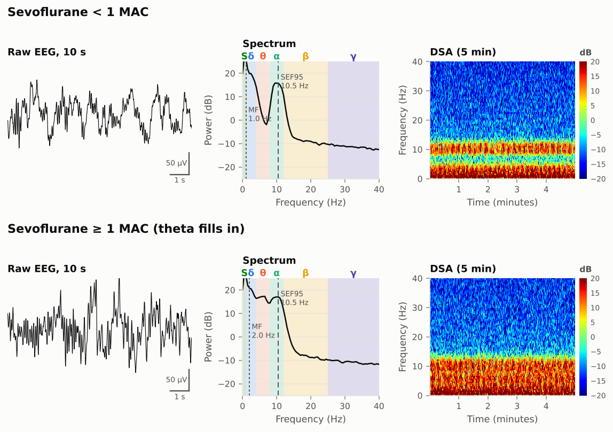
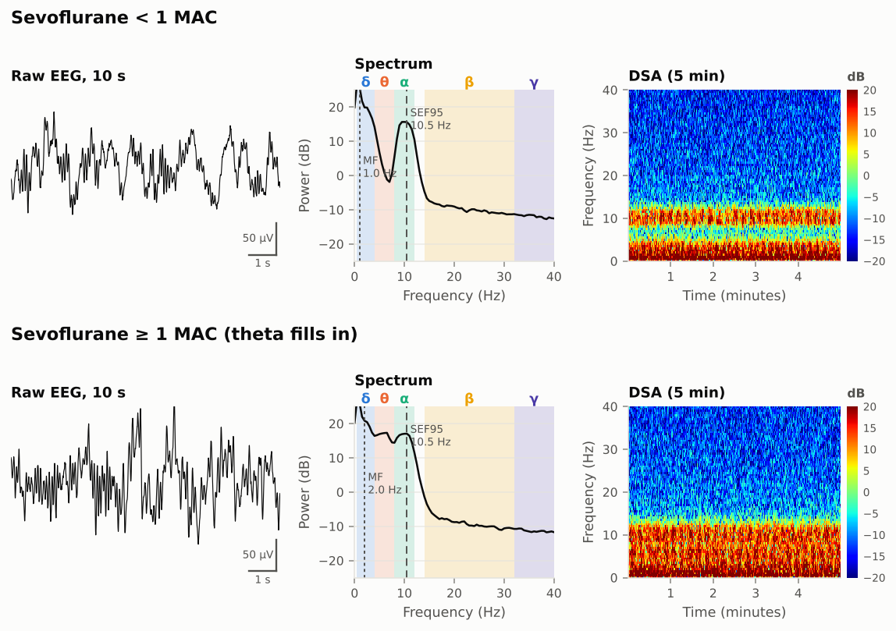
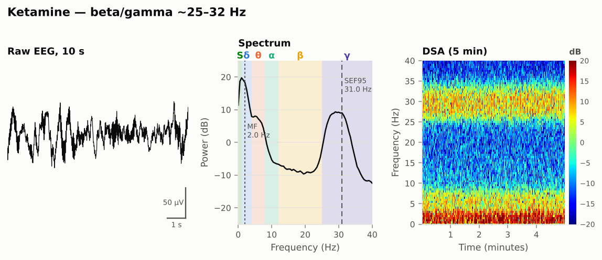
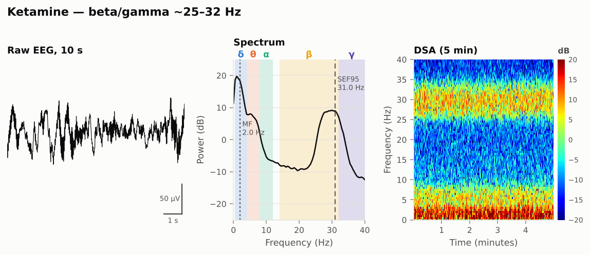
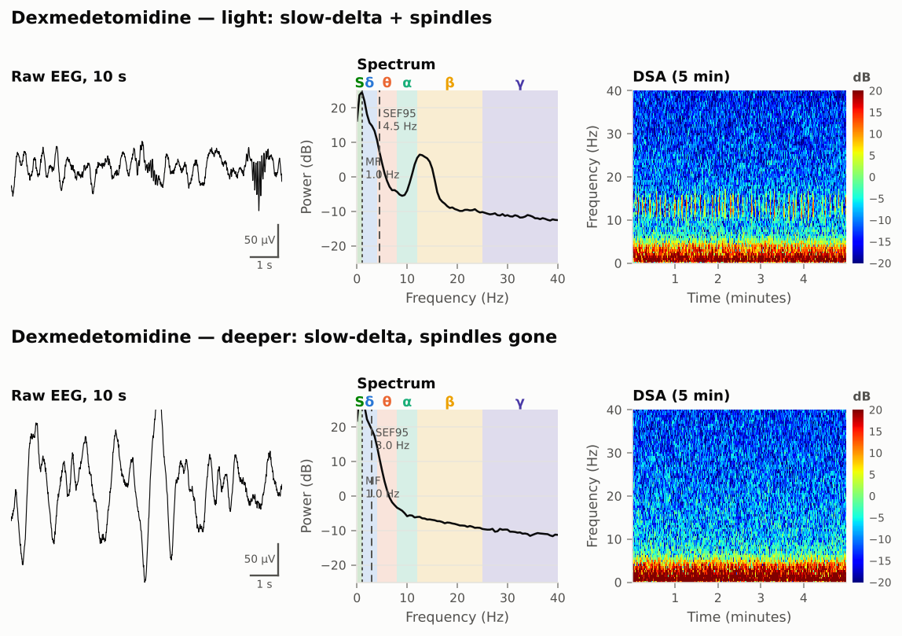
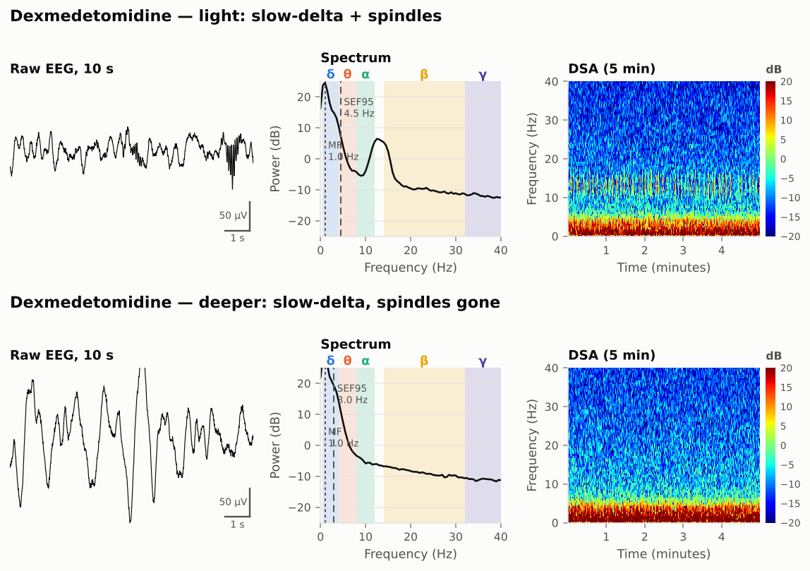
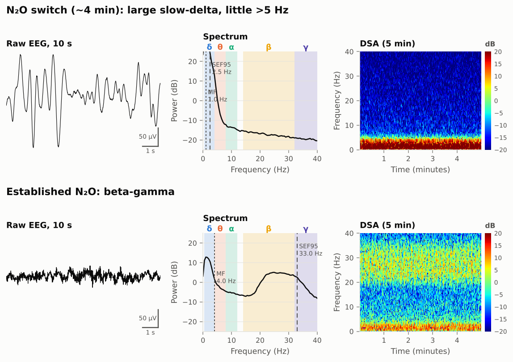
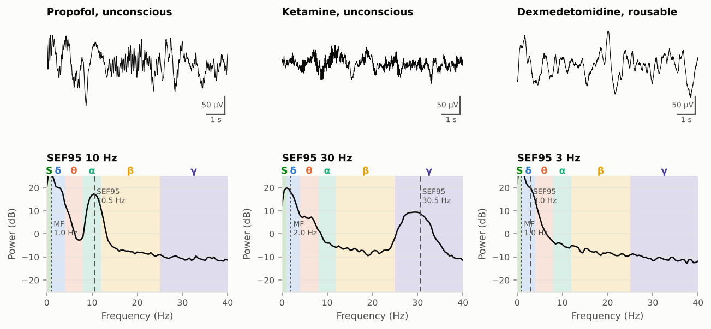

Drug signatures
By the end of this page you should be able to
- Explain how different classes of anaesthetic produce distinct EEG signatures. Delphi EF1
- Recognise the raw EEG and DSA changes produced by each agent. Delphi RW12
- Describe how drug combinations alter these patterns. Delphi EF7
- Advanced: define spindles and distinguish them from alpha. Delphi AN1 Delphi AN4 Delphi AN12
Processed indices assume that the same number means the same depth of unconsciousness whatever drug you give. That assumption does not hold. Anaesthetics act on different molecular targets in different circuits and produce different brain states, and those states are visible in the EEG[1].
| Drug | Main target | Signature (frontal EEG) | What the index does |
|---|---|---|---|
| Propofol | GABAA (cortex, thalamic reticular nucleus, brainstem arousal centres) | Sedation: beta. Unconscious: slow-delta plus coherent alpha. High dose: burst suppression | Behaves as designed. The indices were built mainly on GABAergic data |
| Sevoflurane, isoflurane, desflurane | GABAA plus other targets | Below 1 MAC: like propofol. At 1 MAC or more: theta fills in, giving even power from slow to alpha | Generally as designed |
| Ketamine | NMDA receptors on inhibitory interneurons | Beta-gamma at about 25–32 Hz with irregular slow waves | May rise even though the patient is unresponsive |
| Dexmedetomidine | α2 receptors on locus coeruleus neurons | Light: slow-delta plus 9–15 Hz spindles. Deeper: large slow-delta | May fall very low in a patient who can easily be roused |
| Nitrous oxide | NMDA | Beta-gamma. A transient large slow-delta when switching to high-flow N₂O | May rise, or fall briefly during the switch |
Propofol
Propofol enhances GABAA-mediated inhibition at three main sites: cortical interneuron-to-pyramidal synapses, the thalamic reticular nucleus, and the inhibitory projections from the hypothalamic pre-optic area to the brainstem and hypothalamic arousal centres. Cortex and thalamus are tightly interconnected, so this inhibition does not silence the circuits. Instead it sets up oscillations[1].
- Sedation and paradoxical excitation give organised beta (and gamma) oscillations, usually with some slow-delta.
- A bolus induction gives large slow-delta waves within seconds, from the drug's action on the brainstem arousal centres.
- Unconsciousness in the surgical plane gives slow-delta plus alpha. The alpha is coherent across the frontal cortex and is thought to reflect a thalamocortical loop that blocks normal thalamocortical communication. The slow waves are incoherent and break communication within the cortex, because neurons can only fire in narrow windows set by the local slow-wave phase. Together these probably explain why the patient is unconscious[1].
- Higher doses give burst suppression, and eventually an isoelectric EEG.
- Emergence gives the zipper: alpha and slow-delta fade and beta and gamma return.


The volatile agents
Below 1 MAC, sevoflurane produces strong alpha and slow-delta oscillations that look very like propofol. This suggests enhanced GABAergic inhibition is the main mechanism[1,43]. At about 1 MAC and above, theta oscillations fill the gap between delta and alpha, giving fairly even power from slow through alpha. As the concentration falls, theta disappears first. Isoflurane and desflurane behave similarly[1].


When you see theta filling in on a volatile anaesthetic, the patient is at a more profound level of unconsciousness and immobility, and you may have room to turn the vaporiser down[1].
Ketamine
Ketamine blocks NMDA receptors. At low and moderate doses it acts preferentially on inhibitory interneurons, whose channels are more often open. The result is disinhibition: downstream excitatory neurons become more active, which explains the rise in cerebral metabolism, the hallucinations and the dissociation. At higher doses the NMDA receptors on excitatory neurons are blocked too, and consciousness is lost[1].
Its EEG signature is active rather than slow: high-beta and low-gamma oscillations at about 25–32 Hz, which in Purdon's example began about two minutes after dosing, together with slow waves that are less regular than with propofol[1].


Index algorithms were developed mainly on GABAergic drugs, where "slower" means "deeper". Ketamine's fast oscillations can push the index up even when the hypnotic level is deeper, though the size of the effect depends on dose and background anaesthetic[4]. Do not deepen propofol or volatile to "treat" a ketamine-raised number without checking the raw EEG and DSA.
Dexmedetomidine
Dexmedetomidine acts on α2 receptors on neurons projecting from the locus coeruleus and reduces noradrenaline release. That removes inhibition of the pre-optic area, which in turn inhibits the arousal centres. This is the pathway that starts natural non-REM sleep, so dexmedetomidine sedation looks like sleep on the EEG[1].
- Lighter sedation shows slow-delta oscillations plus spindles: bursts of 9–15 Hz activity lasting 1–2 s, similar to stage N2 sleep. They are much weaker than propofol alpha.
- Deeper sedation: the spindles disappear and slow-delta grows, similar to N3 (slow-wave) sleep[1,44].


Dexmedetomidine can give large slow waves and very low index values, yet the patient wakes easily when spoken to or touched. The low number describes a sleep-like state, not general anaesthesia[1].
Nitrous oxide
Nitrous oxide on its own is not potent enough for general anaesthesia and is normally used as an adjunct. It is associated with beta and gamma oscillations[1]. A distinctive pattern appears when switching from a volatile to high-flow, high-concentration N₂O (over 70%) near the end of a case. Within a few minutes, very large slow-delta waves appear and power above about 5 Hz almost disappears for several minutes. The usual beta-gamma pattern then takes over[1]. The mechanism is unknown. One possibility is NMDA blockade of excitatory brainstem inputs to the thalamus and basal forebrain.

Drug combinations
In practice drugs are combined, and the EEG shows the blend[3]. Some general principles:
- The GABAergic agent (propofol or volatile) usually sets the background pattern of slow-delta plus alpha.
- Adding ketamine to a GABAergic anaesthetic can shift the alpha peak to a higher frequency and add fast activity. Purdon's review cites studies showing this[1].
- Adding N₂O near the end of a case can produce the transient slow-delta described above[1].
- Opioids and analgesia change the EEG indirectly, by changing how the brain responds to noxious stimuli (Module 5).
Purdon and colleagues published a Part II that deals specifically with drug combinations and patient management. It is listed as a candidate for this page on the roadmap.
Why one number can't describe them all

Advanced Spindles and alpha: what's the difference?
Both are thought to come from thalamocortical loops, and both lie roughly between 9 and 15 Hz, so the terms are easily confused (Delphi AN12). The differences:
- Time course. Propofol frontal alpha is continuous and highly coherent. Dexmedetomidine and sleep spindles are brief (1–2 s) and episodic[1].
- Power. Dexmedetomidine spindles carry much less power than propofol alpha. On the same colour scale they look like faint streaks rather than a solid band[1].
- Meaning. Sleep spindles mark stage N2 sleep, a lighter state than slow-wave sleep. Dexmedetomidine spindles fit with light sedation[1].
To spot spindles in the raw trace (Delphi AN4), look for a waxing and waning run of sinusoidal waves at about 12–14 Hz lasting one to two seconds. Each one is spindle-shaped, rising and falling in amplitude, against a slow-wave background.